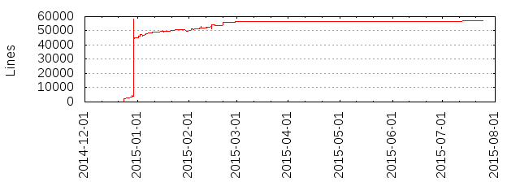

R3X is an experiment to rebuild an entire runtime environment (like JVM) from scratch.
The project began in the November of 2014, as a hobbyist's attempt at studying virtual machines.
Since then, the project has moved quite ahead, and is very functional. There is indeed quite a
lot of complications and technical errors, but it continues to improve. The runtime environment
features a debugger, a fully capable instruction set, a standard library, a compiler and a small
terminal emulator which uses OpenGL capabilities.
The current version of the R3X runtime environment is 0.4.8a codename: Cheesy Blueberry (unstable).
There has been considerable progress on the graphics library, and the standard library is fully functional,
although some features are still missing. Most of the bugs have been identified and resolved, and the compiler
(and programming language) are now quite useful with the arrival of the standard library.
R3X programs are compiled to an architecture independent format, which can be run using the VM
and are architecture independent. The main goal for R3X is to create an environment which offers maximum portability,
while ensuring performance and features. It currently supports I/O, exception handling, multithreading, and dynamic linking.
The runtime also comes with an inbuilt debugger, which has an integrated disassembler, stack tracing,
and a lot of nifty features.
The total R3X source contains 57,377 lines of code (which includes ANSI C, T++, SH and Assembly), the first
version of the project, in comparision contained 1,714 lines of code. That is a 3247.5% increase within just
8 months. Below is a graph of the project's SLOC count history.

You can notice from the graph the project is continously being worked on and improved. There is still a long
way to, with so many shortcomings, but as said before, the project continues to get better.
Since, R3X is a hobby project, it does not aim to as featureful unlike JVM or .NET, which are platforms
designed by large corporations for professional use. This introduces quite a lot of limitations, a few of them
are given below:
The R3X runtime is very minimal, and hence the system requirements are very low, the following are the minimum requirements
for the runtime:
Run 'rxvm' with:
rxvm -exe [executablename]For more options see docs/Building.html.
Github Site: https://github.com/Benderx2/R3X/
Github Tarball: https://github.com/Benderx2/R3X/tarball/master
Github Zip: https://github.com/Benderx2/R3X/zipball/master
Release 0.4.7b (for Linux x64 Only): https://github.com/Benderx2/R3X/releases/tag/0.4.7b
/ --------------------------------------------------------- Parent Directory. -----> compiler/ : Contains the T++ compiler sources and examples. -----> disasm/ : Contains the toolchain sources (rexdump, readrex and cgen) -----> docs/ : Containts the documentation for the R3X VM ------> data : Contains the data files required by the HTML document sources -----> fasm/ : Contains the source for Flat Assembler (by Tomasz Grystar) -----> llvm/ ------> llvm/ ----> lib/ -----> target/ : Contains the target file for LLVM toolchain (Work in progress!) -----> server/ : Contains the implementation of R3X server -----> src/ : Contains the source code for VM, it's programs and libraries ------> include/ : Contains the include the directory for the VM. -----> win32 : contains include files specific to win32 port of R3X ------> lib/ : Contains the libraries for the VM. ----> gl/ : Contains the GL wrapper for R3X ----> include/ : Include files for creating native shared libraries for the runtime ----> ntmalloc/ : Malloc wrapper for R3X native shared libraries ----> rstdlib/ : Standard library source. (with T++ examples) ------> include/ : Contains the include directory with rstdlib.h (header for t++ programs) ----> rxvmlib/ : Library that provides a communication layer between the R3X runtime and the shared library. ------> win32/ : Contains sources specific to win32 port of R3X ------> programs/ : Contains the programs directory written in R3X assembly which can be assembled with FASM. ----> libR3X/ : FASM architecture-specific include files (defines opcodes with macros)
Copyright (c) 2015 Benderx2, All rights reserved. Redistribution and use in source and binary forms, with or without modification, are permitted provided that the following conditions are met: * Redistributions of source code must retain the above copyright notice, this list of conditions and the following disclaimer. * Redistributions in binary form must reproduce the above copyright notice, this list of conditions and the following disclaimer in the documentation and/or other materials provided with the distribution. * Neither the name of R3X nor the names of its contributors may be used to endorse or promote products derived from this software without specific prior written permission. THIS SOFTWARE IS PROVIDED BY THE COPYRIGHT HOLDERS AND CONTRIBUTORS "AS IS" AND ANY EXPRESS OR IMPLIED WARRANTIES, INCLUDING, BUT NOT LIMITED TO, THE IMPLIED WARRANTIES OF MERCHANTABILITY AND FITNESS FOR A PARTICULAR PURPOSE ARE DISCLAIMED. IN NO EVENT SHALL THE COPYRIGHT HOLDER OR CONTRIBUTORS BE LIABLE FOR ANY DIRECT, INDIRECT, INCIDENTAL, SPECIAL, EXEMPLARY, OR CONSEQUENTIAL DAMAGES (INCLUDING, BUT NOT LIMITED TO, PROCUREMENT OF SUBSTITUTE GOODS OR SERVICES; LOSS OF USE, DATA, OR PROFITS; OR BUSINESS INTERRUPTION) HOWEVER CAUSED AND ON ANY THEORY OF LIABILITY, WHETHER IN CONTRACT, STRICT LIABILITY, OR TORT (INCLUDING NEGLIGENCE OR OTHERWISE) ARISING IN ANY WAY OUT OF THE USE OF THIS SOFTWARE, EVEN IF ADVISED OF THE POSSIBILITY OF SUCH DAMAGE. NOTE: The files src/win32/dlfcn.c and src/include/win32/dlfcn.h have been taken from github.com/dlfcn-win32/dlfcn-win32 The file src/inclue/win32/dbghelp.h has been taken from mingw64's headers.